|
|
|
seaweeds
text index | photo
index
|
| Seaweeds in general |
| Cyanobacteria Division Cyanophyta updated Aug 10
What are cyanobacteria? Cyanobacteria are microscopic organisms that live in water and can undergo photosynthesis. Although they are sometimes called blue-green algae, they are not related to algae. They are classified with bacteria because these organisms share similar features with bacteria. Cyanobacteria are more abundant in the intertidal zone than in the open ocean. They are also found in soil and freshwater, and some even live inside rocks. They are also found in extreme conditions such as hot springs and snowfields. Where seen? On our shores, cyanobacteria can be seen growing on rocks as well as on sandy shores among seagrasses and seaweeds. 90 species of cyanobacteria are recorded for Singapore by Pham (link below). Some live inside other animals such as sponges like Lamellodysidea herbacea. Features: They have a bluish pigment phycocyanin that is used to capture light for photosynthesis. They also contain chlorophyll. Big bacteria: These microscopic organisms sometimes can aggregate to produce structures large enough for us to see and feel. These can appear as blobs on rocks, or fine hair-like filaments on rocks and among seaweeds and seagrasses, sometimes forming mats. On land, they may look like slime or scum. They are not always blue or green. Some can be black, brown or red. Bacteria reefs: Although tiny, these organisms can have a large impact on the environment. Cyanobacteria produced stromatolites, the oldest living fossils, dating 3 billion years. Stromatolites are large, hard structures of laminated calcium or silica. Some cyanobacteria continue to produce stromatolites today in tropical Australia and the Bahamas. These large structures are produced by microscopic animals so a stromatolite 1m tall may be 2,000 years old! The chloroplast which plants use to undergo photosynthesis and make food, is actually a cyanobacterium living inside the plant's cell! It is believed that the oxygen atmosphere we breathe was generated by cyanobacteria in prehistoric times. Cyanobacteria were the dominant lifeform on Earth 2 billion years ago. Today, cyanobacteria continue to have an impact. The Red Sea is named for the red colour of cyanobacteria Oscillatoria that produce dense blooms in that body of water. African flamingos are pink from eating a kind of red cyanobacteria Sirulina. Some species of cyanobacteria can fix atmospheric nitrogen for their own needs. Some of these are believed to benefit seagrasses by fixing nitrogen for the seagrasses. Role in the habitat: Cyanobacteria are eaten by a wide range of animals. Among the common animals believed to eat cyanobacteria are sea slugs like the Hairy sea hare (Bursatella leachii) and Long-tailed hairy sea hare (Styloceilus sp.) Human uses: Some species of cyanobacteria are able to breakdown heavy hydrocarbons and may thus have a practical use in cleaning up oil spills. The nitrogen-fixing properties of cyanobacteria are believed to be important to the fertility of ride padi fields. On the other hand, blooms of cyanobacteria in nutrient rich waters (e.g., polluted by agricultural drainage or sewage) can produce toxins that poison the water. |
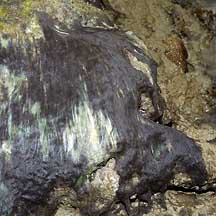 Hair-like cyanobacteria St. John's Island, May 05 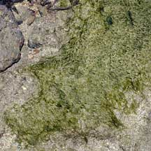 Lazarus Island, Dec 06 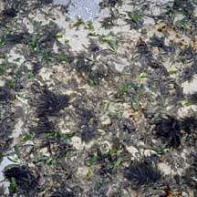 Growing among and on seagrasses Cyrene Reef, Aug 10 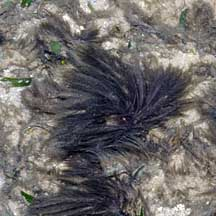 |
|
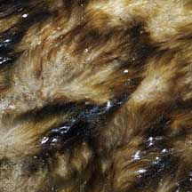 Pulau Semakau, Apr 08 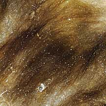 |
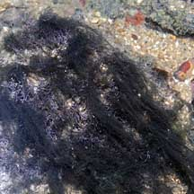 Sentosa, Jul 08 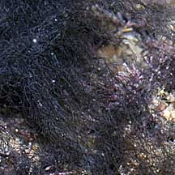 |
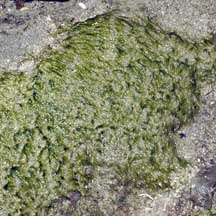 Sisters Island, Feb 08 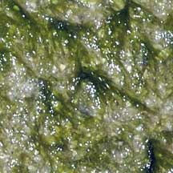 |
|
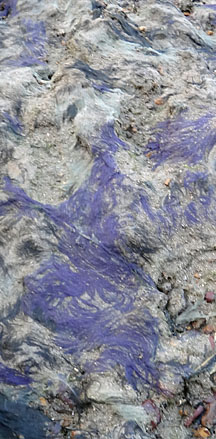 Lazarus Island, Aug 12 |
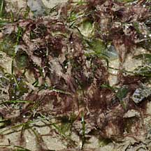 Changi, Jun 10 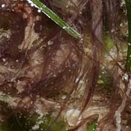 |
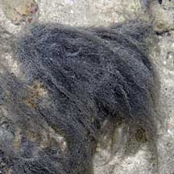 Pulau Senang, Jun 10 |
| Cyanobacteria on Singapore shores |
| Photos of Cyanobacteria for free download from wildsingapore flickr |
| Distribution in Singapore on this wildsingapore flickr map |
Links
|